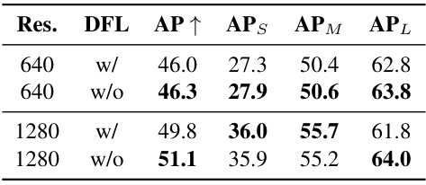
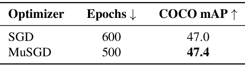
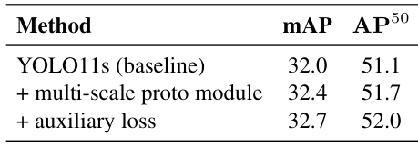
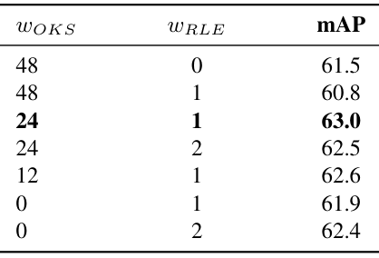
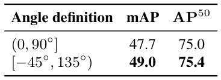
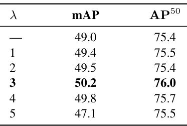

Unified Real-Time
End-to-End Vision Models
统一实时端到端视觉模型家族
研究摘要
实时视觉需求模型在准确、高效且易于跨硬件部署。YOLO系列虽已广泛应用，但大多数YOLO检测器仍依赖NMS后处理、因DFL导致检测头过重、需要长训练周期，且小目标可能无法获得正标签分配。
背景与动机
当前YOLO检测器的问题
- 推理仍依赖NMS后处理，增加部署复杂度
- DFL模块使检测头参数膨胀（4标量→4K logits）
- 标准SGD需约600 epoch才能达到竞争力精度
- TAL标签分配导致极小目标零正样本分配
YOLO26的解决方案
- 双头设计：原生NMS-free端到端推理路径
- 完全移除DFL，直接回归获得无约束范围
- MuSGD加速收敛，减少训练周期
- STAL保证小目标的正样本覆盖
核心挑战：在保持部署通用性与多任务统一性的前提下，解决NMS依赖、DFL开销、训练效率和小目标分配四大瓶颈
主要贡献
DFL-free 双头架构
原生NMS-free端到端推理，更轻量的回归头，无约束边界框范围，保留可选密集分支用于精度关键部署
协调训练管线
MuSGD（混合Muon+SGD优化器）+ Progressive Loss（渐进损失重加权）+ STAL（小目标感知标签分配）
多任务扩展
实例分割（多尺度原型融合+辅助语义监督）、姿态估计（RLE不确定性感知回归）、定向检测（长边角度公式）
开放词汇 YOLOE-26
支持文本提示、视觉提示和无提示三种推理模式，YOLOE-26x在LVIS minival达40.6 AP
相关工作综述
CNN检测器演进
两阶段(Faster R-CNN) → 一阶段(SSD/YOLO) → Anchor-free(FCOS/YOLOv8) → NMS-free(YOLOv10)
Transformer检测器
DETR端到端集合预测 → Deformable DETR → RT-DETR实时优化 → D-FINE/DEIMv2持续改进
开放词汇检测
文本提示(GLIP/Grounding DINO/YOLO-World) → 视觉提示(OWL-ViT/T-Rex2) → 无提示(GRiT/YOLOE)
YOLO26的核心差异化：在保持YOLO部署通用性（19+导出目标）和多任务统一性的同时，通过架构与训练的协调改进实现端到端NMS-free推理
YOLO26 架构设计
YOLO26围绕三个设计目标：端到端简洁性、部署效率、更强优化

图：COCO val2017上的精度-延迟权衡，YOLO26在各尺度上均位于或推进Pareto前沿
训练管线：三大核心组件
MuSGD 优化器
Muon+SGD混合优化，多维参数使用正交化更新，1D参数使用纯SGD，加速收敛并提升稳定性
Progressive Loss
渐进式损失重加权，从(0.8, 0.2)线性过渡到(0.1, 0.9)，将优化焦点从密集分支转向端到端分支
STAL 标签分配
小目标感知标签分配，将小于最小步长的目标尺寸钳位到参考尺寸，保证零正样本情况下的监督覆盖
总检测损失：L_total = α(t) · L_o2m + (1−α(t)) · L_o2o，其中α(t)随epoch线性衰减，实现从密集监督到推理监督的平滑过渡
DFL移除与双头设计
Distribution Focal Loss
- 每边预测K个bin的离散分布（K=16）
- 回归从4标量膨胀至4K logits
- YOLO11n：2.6M参数 / 6.5 GFLOPs
- 有限回归范围：(K−1)×stride
- 高分辨率下对大目标受限
直接回归 + L1 Loss
- 直接预测4个边界框标量
- 无约束回归范围
- YOLO26n：2.4M参数 / 5.4 GFLOPs
- 1280分辨率下大目标更完整
- 简化导出，兼容受限运行时
移除DFL后，通过 Progressive Loss 和 STAL 完全恢复并超越原精度，同时获得更轻量的头和更快的推理
任务特定扩展
实例分割
多尺度原型通路融合高层语义上下文 + 训练-only辅助语义分割损失（BCE+Dice），不增加推理开销
姿态估计
RLE残差对数似然估计替代传统回归，联合OKS损失，实现每关节不确定性建模与更精确关键点定位
定向检测
长边角度定义[−45°, 135°)替代OpenCV约定，直接预测角度去除sigmoid压缩，专用角度损失解决方形物体歧义
Mask AP 提升
COCO实例分割相比YOLO11
Pose AP 提升
COCO关键点相比YOLO11
OBB mAP 提升
DOTA-v1.0相比YOLO11
YOLOE-26 开放词汇检测
YOLOE-26在YOLO26检测器基础上引入四项关键改进
RepRTA策略，MobileCLIP2文本编码器，区域特征与文本嵌入对齐
SAVPE模块，解耦语义与激活分支生成视觉嵌入
LRPCHead利用内置词汇和专用特征嵌入检测通用目标
实验设置
数据集与模型
COCO 2017 / DOTA-v1.0 / LVIS minival
5个变体: n / s / m / l / x
640×640 输入分辨率
Objects365-v1预训练150 epoch
训练配置
COCO微调：n/s/m/l/x 分别为 245/70/80/60/40 epoch
全局batch size: 128
Progressive Loss: (0.8,0.2)→(0.1,0.9)
STAL: s_ref=16, s_min=8
测试平台
T4 GPU + TensorRT10 FP16
CPU: Intel Xeon @ 2.00 GHz
ONNX格式CPU推理基准
评估指标
mAP (AP⁵⁰:⁹⁵, AP⁵⁰, AP⁷⁵)
APS / APM / APL
参数量 & FLOPs
推理延迟 (ms) — GPU/CPU
COCO 主要检测结果
| Model | Size | mAP | mAP (E2E) | CPU ONNX (ms) | T4 TRT10 (ms) | Params (M) | FLOPs (B) |
|---|---|---|---|---|---|---|---|
| YOLO26n | 640 | 40.9 | 40.1 | 38.9 | 1.7 | 2.4 | 5.4 |
| YOLO11n | 640 | 39.3 | — | — | 1.5 | 2.6 | 6.5 |
| YOLO26s | 640 | 48.6 | 47.8 | 87.2 | 2.5 | 9.5 | 20.7 |
| YOLO11s | 640 | 47.0 | — | — | 2.5 | 9.4 | 21.5 |
| YOLO26m | 640 | 53.1 | 52.5 | 220.0 | 4.7 | 20.4 | 68.2 |
| YOLO26l | 640 | 55.0 | 54.4 | 286.2 | 6.2 | 24.8 | 86.4 |
| YOLO26x | 640 | 57.5 | 56.9 | 525.8 | 11.8 | 55.7 | 193.9 |
YOLO26在所有尺度上均取得最优精度，E2E路径与NMS路径差距仅0.6–0.8 AP。CPU ONNX推理速度提升最高43%。
消融实验：从YOLO11s到YOLO26s
| Configuration | AP (E2E) | AP (Non-E2E) | Params (M) | FLOPs (G) | Latency (ms) |
|---|---|---|---|---|---|
| YOLO11s (Baseline) | — | 47.0 | 9.4 | 21.5 | 2.5 |
| −DFL | — | 46.4 | 9.1 | 20.1 | 2.3 |
| + L1 Loss | — | 46.6 | 9.1 | 20.1 | 2.3 |
| + STAL | — | 46.8 | 9.1 | 20.1 | 2.3 |
| + Backbone/neck refinement | — | 47.0 | 9.5 | 20.7 | 2.5 |
| + E2E training | 46.4 | 47.0 | 9.5 | 20.7 | 2.5 |
| + Progressive Loss | 46.7 | 47.2 | 9.5 | 20.7 | 2.5 |
| + MuSGD | 47.1 | 47.6 | 9.5 | 20.7 | 2.5 |
| + Objects365 Pretrained | 47.4 | 48.0 | 9.5 | 20.7 | 2.5 |
| + Hyperparameter Search (Final) | 47.8 | 48.6 | 9.5 | 20.7 | 2.5 |
核心设计消融
优化器对比
SGD 600 epochs: 47.0 mAP
MuSGD 500 epochs: 47.4 mAP
+0.4 mAP，减少16.7%训练周期
损失调度对比
固定(0.5,0.5): 46.4 E2E AP
最优(0.8,0.2)→(0.1,0.9): 46.7 E2E AP
早期给one-to-one分支非零监督是关键
参考尺寸 s_ref 对比
TAL baseline: 46.6 AP (APS 29.0)
STAL s_ref=16: 46.8 AP (APS 29.6)
s_ref=8/32均不如baseline，确认s_ref=16最优
分辨率消融
640分辨率: 无DFL +0.3 AP / +1.0 APL
1280分辨率: 无DFL +1.3 AP / +2.2 APL
高分辨率下DFL有限范围限制更明显
消融补充（一）：DFL 移除 · MuSGD · 分割原型

Table 3：去 DFL 在两种分辨率下均提升 AP

Table 4：MuSGD 同时改善收敛速度与最终精度

Table 8：多尺度原型与辅助损失的收益可以叠加
消融补充（二）：姿态权重 · 角度定义 · λ 消融

Table 9：RLE 需与 OKS 按恰当配比联合使用

Table 10：长边定义缓解了边交换造成的回归不连续

Table 11：λ 需要取适中值才能兼顾各宽高比目标
多任务实验结果
实例分割 (COCO)
多尺度Proto模块: 32.0→32.4 mAP
+辅助损失: 32.4→32.7 mAP
YOLO26全系列超越YOLO11：
+1.6~2.5 box AP, +2.4~3.7 mask AP
姿态估计 (COCO)
w_OKS=24 + w_RLE=1 最优配置
YOLO26全系列超越YOLO11：
+2.1~7.2 pose AP
E2E与NMS路径差异≤0.2 AP
定向检测 (DOTA-v1.0)
长边角度定义: 47.7→49.0 mAP
+角度损失(λ=3 最优): 49.0→50.2 mAP
λ=1~4 均优于 49.0，λ=5 回落至 47.1
+2.5~3.4 mAP, AP75增益更大
所有任务扩展均基于共享检测器改进，在统一训练和部署管线内实现一致增益，无需为各任务维护独立模型
开放词汇检测结果
YOLOE-26s-TP在LVIS minival上的逐步改进
YOLOE-26x 文本提示
LVIS minival，超越DetCLIPv3 +6.2 AP
YOLOE-26x 视觉提示
LVIS minival，最强视觉提示结果
YOLOE-26l 无提示
LVIS minival prompt-free设置
部署与导出能力
YOLO26支持19种非PyTorch导出目标，覆盖云、移动端和嵌入式平台

图：YOLO26部署管线，支持两种推理路径和广泛的导出目标
总结与讨论
核心成就
成功构建统一实时视觉模型家族，在保持YOLO部署通用性和多任务统一性的同时，实现原生NMS-free端到端推理和SOTA精度-延迟权衡。
技术创新
DFL-free双头架构、MuSGD加速收敛、Progressive Loss对齐训练与推理、STAL保障小目标监督，四项改进协同作用。
性能表现
COCO检测40.9–57.5 mAP，实例分割+3.7 mask AP，姿态估计+7.2 AP，定向检测+3.4 mAP，开放词汇40.6 AP。
未来展望
超越COCO-centric基准评估、探索自适应损失调度形状、扩展Objects365-v1之外的预训练数据（网络规模或定位语料）。
"YOLO26 combines a dual-head NMS-free architecture with MuSGD, Progressive Loss, and STAL to improve the accuracy–latency trade-off across five model scales and multiple vision tasks."
感谢聆听
统一实时端到端视觉检测新时代